Matplotlib
Goals
- Survey various options available in
matplotlibfor manipulating figures, annotations, styles, and colors. - Develop awareness about color perception and colorblindness.
Packages and Data
# Palmer Penguins
penguins = pd.read_csv(os.path.join("assets", "penguins.csv"))
penguins = penguins.dropna(subset=["body_mass_g"])
# Flights; only place we use Seaborn
flights = sns.load_dataset("flights")
# COLORS is a 'constant', so I prefer to use uppercase
# to distinguish this variable name from others I might use
# in a quick-prototyping context
COLORS = {"Adelie": "#EA9839", "Chinstrap": "#984AE5", "Gentoo": "#469093"}Overview
- Created in 2003 by neurobiologist John D. Hunter by adopting MATLAB’s plotting approach to Python.
- Among the most widely used plotting library for creating static, animated, and interactive visualizations.
- Extensive customization and control over plot elements.
- Support for static figures, animations, and interactive tools.
- The
matplotlibapproach is imperative: you specify how to create your visualizations.
Learning Resources
Working with Figure and Axis
Every figure is represented by a Figure object. This stores everything in a visualization. There are many ways to declare one; here is an example.
The Figure reports its size in pixels (672 by 480). But nothing is shown even though we attempt to display it. We must add an Axis to our Figure, fig. An Axis object serves as a “canvas” that we can draw on.
Once we have a Figure with at least one Axis, we can add a plot using one of many plotting commands.
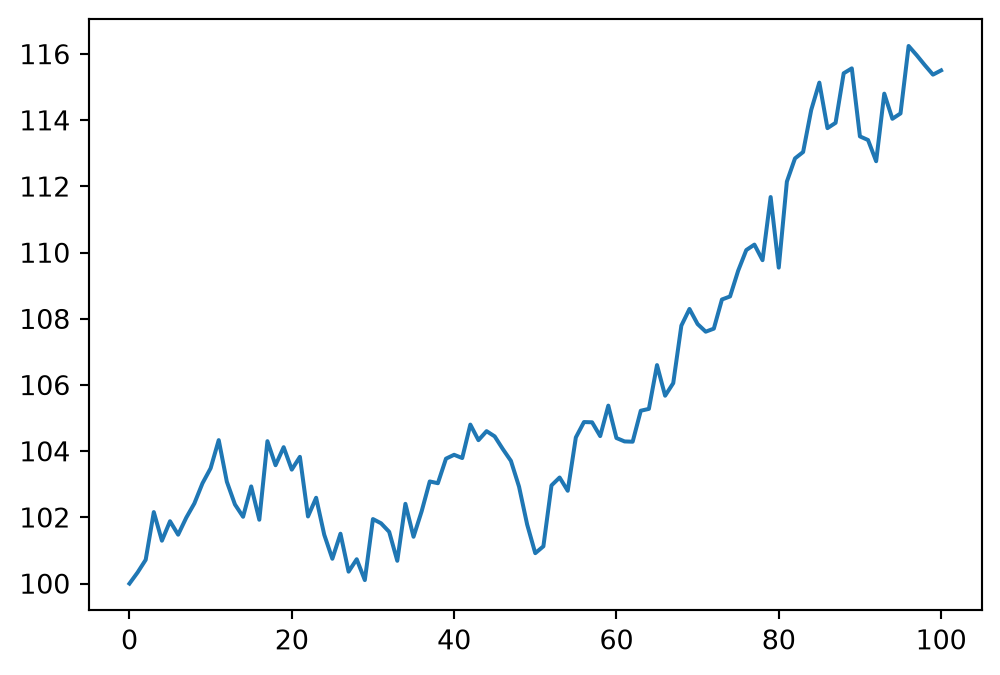
- To plot inside a specific subplot, use the
ax.<plot method>()syntax. - The
figsizekeyword option can be used to specify the figure size as a tuple, in inches (default). Can also report(width, height, unit). - The top-level
show()function can be used to force display of the currentFigure. - Note that the \(x\) and \(y\) axes are automatically resized for us.
Initializing a Figure with multiple Axis is common enough that it has its own interface.
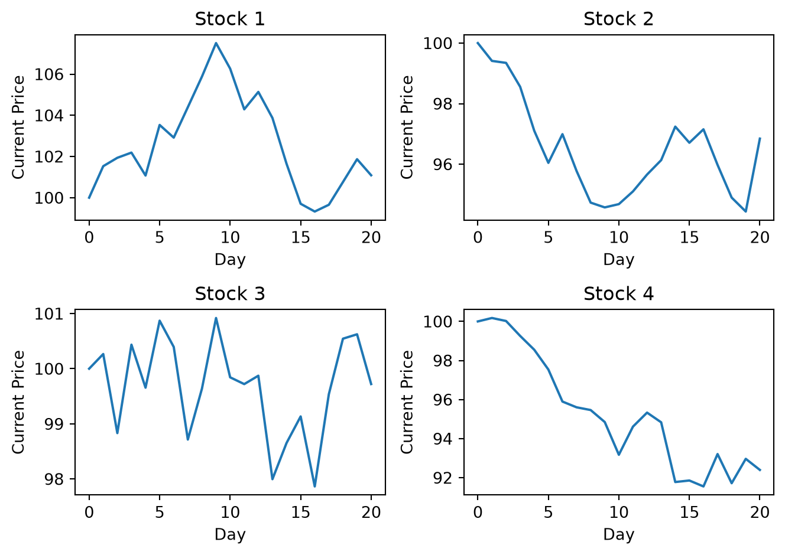
- The
np.ravel()function allows us to iterate throughaxs, which is a 2D NumPyarray. - We can modify attributes in a given
Axisusing set methods like.set_xlabel(). - These attributes are specific to each
Axis. - The
.tight_layout()tidies up any margins, paddings, and other empty space. Use it only once you’ve finished plotting.
Adding style with Artist objects
Nearly every visible element in a Figure is governed by an Artist. Each Axis has its own Artist objects, cannot be shared across axes, and are responsible for drawing data to a canvas.
You can specify visual elements like color or line style directly in a plot command. For example, the following modifies our simple line plot to have a red dotted line.
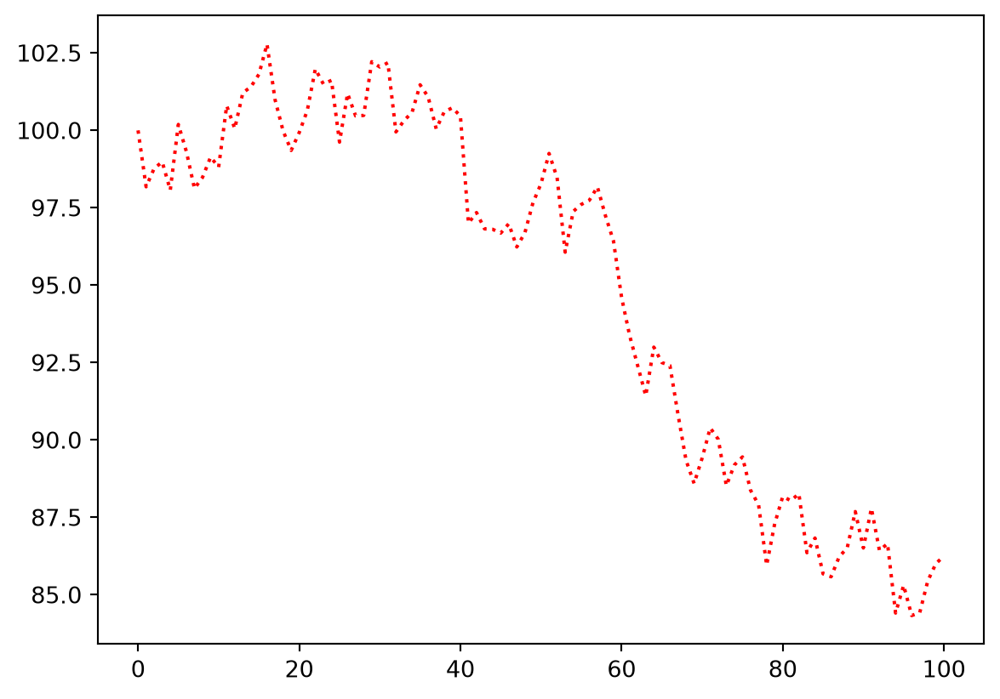
Alternatively, each plotting command returns artist objects. You can modify the visual elements with “setters”:
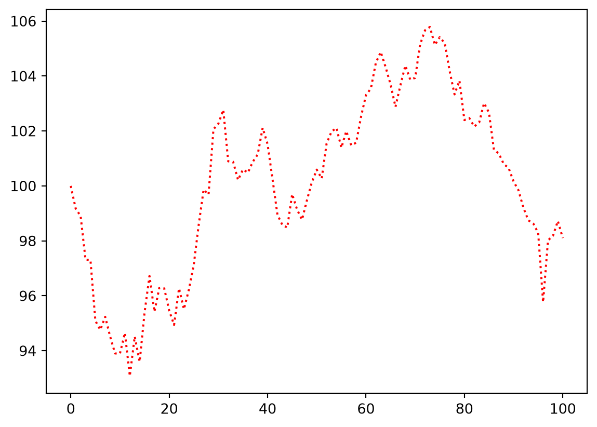
- Some attributes may not be exposed directly through the plotting command you use.
- Working with
Artistobjects directly is very flexible but more tedious to the key-value approach. - A plotting command may return multiple artists, so we use destructuring to get a particular subset of them:
item1, item2, = function_call().
Colors
Specifying colors
There are many ways of specifying colors in matplotlib:
- Use RGB or RGBA (RGB + alpha for transparency). Each color channel is given as a value in the unit interval, \([0,1]\).
- Using a
tuple:(0, 0, 0)is black,(1, 0, 0)is pure red.
- Using a
- Use HTML color codes (hexadecimal). See the website HTML Color Codes.
- Use X11/CSS4 color names, without spaces:
black,red,aquamarine.
In some cases we may need to use a predefined colormap.
Diverging colormaps
Useful for emphasizing directionality (e.g. correlations).
- We compute correlations between numeric variables in the
penguinsdataset. - The
matshowplot displays data from an array (a matrix in this case). - Use
RdBu_rcolormap: Ranges from blue (low end) to red (high end) because it is the reversed version,_r.
corr = penguins.corr(numeric_only=True)
labels = corr.columns
# Always use [-1,1] if you're reporting correlations... don't clip the limits!
fig, ax = plt.subplots()
im = ax.matshow(corr, cmap = "RdBu_r", vmin = -1, vmax = 1)
# Annotate each cell. We use white and black text for readability.
for i in range(len(labels)):
for j in range(len(labels)):
r = corr.iloc[i, j]
ax.text(j, i, f"{r:.2f}",
ha = "center",
va = "center",
color = "white" if abs(r) > 0.6 else "black"
)
ax.set_title("Correlations between penguin measurements")
ax.set_xticks(range(len(labels)), labels, rotation = 45, ha = "center")
ax.set_yticks(range(len(labels)), labels)
fig.colorbar(im, ax = ax, label = "Pearson Correlation")
plt.tight_layout()
plt.show()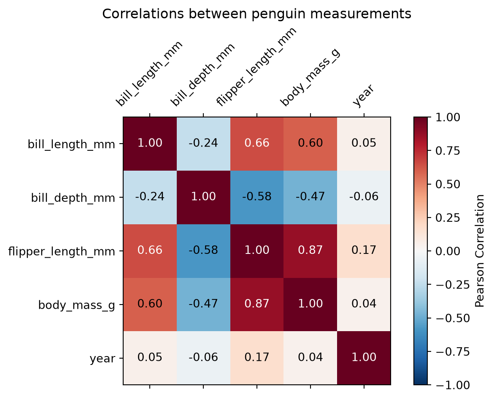
Sequential colormaps
Useful for reporting continuous data without an obvious or meaningful “middle”. Need to keep in mind which colors represent “more” and “fewer”, so higher contrast is desirable.
month_order = [
"Jan", "Feb", "Mar", "Apr",
"May", "Jun", "Jul", "Aug",
"Sep", "Oct", "Nov", "Dec"
]
# Reshape the DataFrame:
# + Use `month` as an identifier; i.e. row labels.
# + Take the unique values in the `year` column and make them columns.
# + Entries in the new DataFrame has `passengers` values.
table = (
flights.pivot(index = "month", columns = "year", values = "passengers")
.reindex(month_order) # avoid accidental sorting
)
fig, ax = plt.subplots()
im = ax.imshow(table, cmap = "viridis", aspect = "auto")
ax.set_title("Airline passengers by month and year")
ax.set_xticks(range(len(table.columns)), table.columns, rotation = 45)
ax.set_yticks(range(len(table.index)), table.index)
ax.set_xlabel("Year")
fig.colorbar(im, ax = ax, label = "Passengers (thousands)")
plt.show()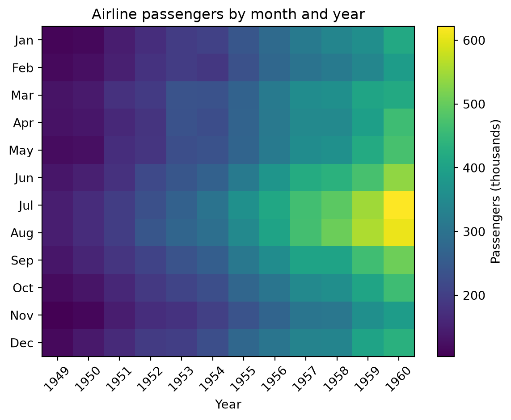
Cyclic colormaps
Useful for reporting data that have a period because the first and last colors are similar. For example, months, hours of the day, and compass directions can all use a cyclic colormap.
month_order = [
"Jan", "Feb", "Mar", "Apr",
"May", "Jun", "Jul", "Aug",
"Sep", "Oct", "Nov", "Dec"
]
fig, ax = plt.subplots()
cyclic = plt.get_cmap("twilight")
for i, month in enumerate(month_order):
d = flights[flights["month"] == month]
ax.plot(d["year"], d["passengers"], color = cyclic(i / 12), label = month)
ax.set(title = "Passengers by month of year",
xlabel = "Year",
ylabel = "Passengers (thousands)"
)
ax.legend(title = "Month", ncol = 2)
plt.show()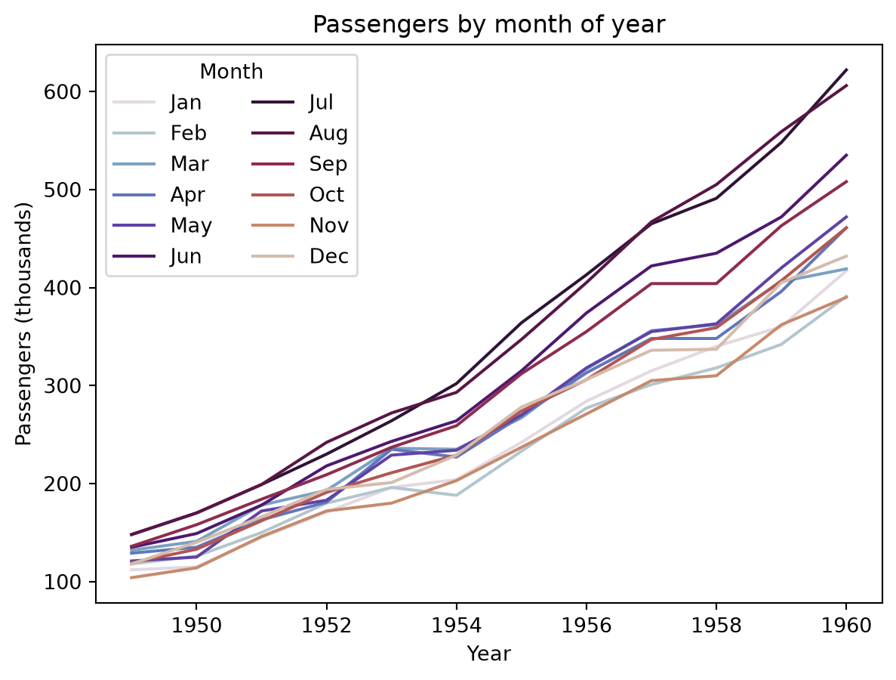
Qualitative colormaps
Useful for conveying discrete, unordered categories.
fig, ax = plt.subplots()
for species, color in COLORS.items():
d = penguins[penguins["species"] == species]
ax.scatter(d["bill_length_mm"], d["bill_depth_mm"],
color = color,
label = species,
alpha = 0.6,
edgecolor = "white"
)
ax.set(title = "Palmer Penguins",
xlabel = "Bill length (mm)",
ylabel = "Bill depth (mm)"
)
ax.legend(title = "Species")
plt.show()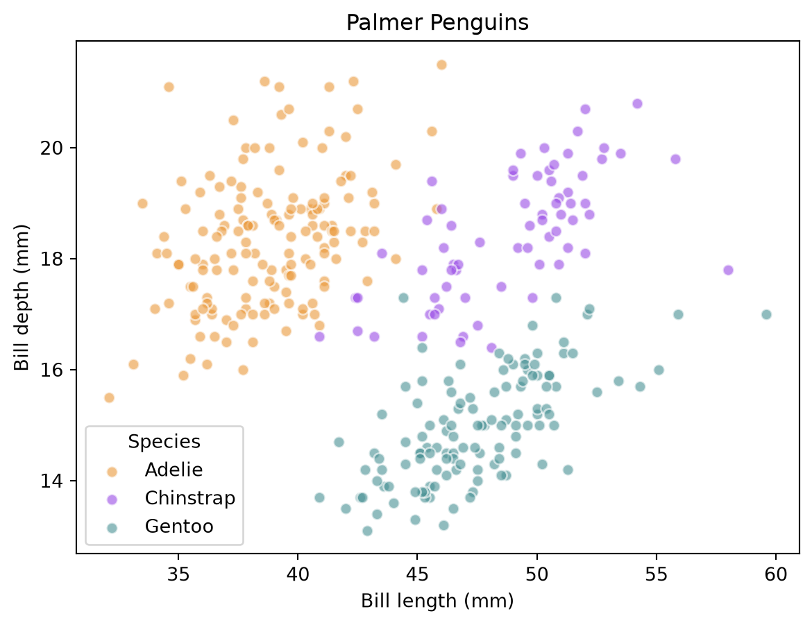
Colorblindness
Most plotting libraries oriented around data analysis have references or support for colorblind options. Matplotlib references this website as a resource for understanding color perception and color scales in colorblind individuals.
- More common in males in many populations.
- Common forms of colorblindness are sex-linked, specifically due to mutations in the X-chromosome.
- Not simply a matter of avoiding specific colors. Red-Green blindness is common, but some reds and greens are distinguishable for these individuals and other colors are affected, too.
Complex Layouts
The library supports creating layouts beyond the basic grid approach. See this tutorial.
The standard grid layout should suffice for most graphics we’ll need to create.
Exporting Figures
The matplotlib.pyplot.savefig function will save a Figure in many common formats. Always refers to the current figure (can’t pass as an argument).
If you have access to a Figure object directly, you can invoke the method instead:
Working with DataFrames
Most of the plotting functions with accept data as an array-like object. Many of the plot types will also accept a data keyword, allowing you to set x and y arguments to column names from a DataFrame object.
Gallery
Here we illustrate a tiny subset of the kinds of plots you can make with matplotlib.
Scatter + Line Plots
Idea: Convey change in one variable relative to another.
fig, ax = plt.subplots()
# series 1
ts, ys = simulate_stock_market(10.0, 100)
ax.scatter(ts, ys, color = (0, 0, 0)) # RGB
ax.plot(ts, ys, color = ('red', 0.4)) # add transparency
# series 2
ts, ys = simulate_stock_market(10.0, 100)
ax.scatter(ts, ys, color = (0, 0, 1), marker = 'x')
ax.plot(ts, ys, color = 'orange', linestyle = '--')
plt.show()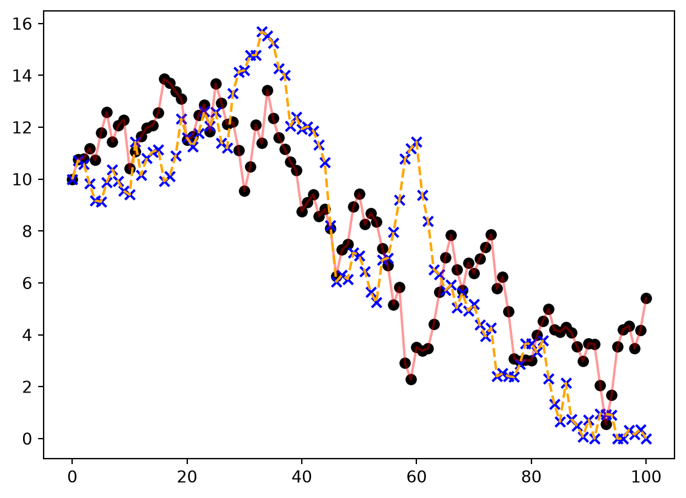
- Distinct markers differentiate variables here.
- Lines connect data values in sequence. This is not always appropriate!
- Solid line: Usually conveys a “true” relationship.
- Dashed line: Usually conveys interpolation or extrapolation.
Bar Plots
x = 0.5 + np.arange(8) # positions
y = [4.8, 5.5, 3.5, 4.6, 6.5, 6.6, 2.6, 3.0] # values
# put the data in a Figure
fig, ax = plt.subplots()
ax.bar(x, y, width=1, edgecolor="white", linewidth=0.7)
ax.set(xlim=(0, 8), xticks=np.arange(1, 8),
ylim=(0, 8), yticks=np.arange(1, 8))
# add annotations to the top of the bars
offset = 0.1
for i in range(0, len(x)):
# x position, y position, label
ax.text(x[i], y[i] + offset, str(y[i]), horizontalalignment = 'center')
plt.show()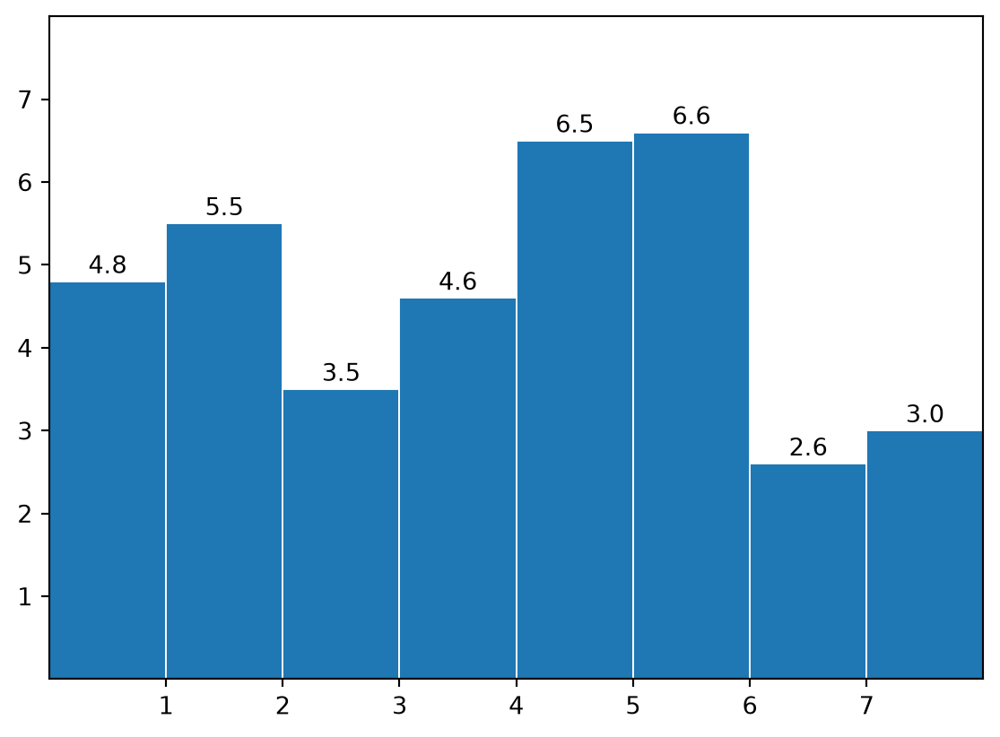
- If you use this, it needs to be better than a table.
- If you can afford the space, add labels on the bars.
- Useful if you need to make comparisons across groups.
- The \(x\)-axis here corresponds to a discrete variable, or at least a discretized variable.
- Easy to abuse; makes the most sense if your data has a natural minimum vallue.
Contour Maps
Idea: Summarize a density using a smooth estimate.
In the following example, data are bivariate (two variables) and centered at the point \((-2, 10)\).
- The two components are not independent. The
covmatrix describes how the data co-vary. - Most points concentrate near the center.
- As we move further away from center, along specific directions, we should see fewer points.
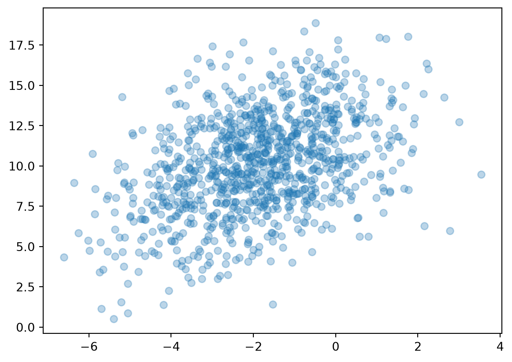
The contourf surface conveys the density of points, and hence the distribution. In addition, we include the marginal plots, which are just histograms of the individual variables.
- In the contour map, color conveys density, with lighter colors indicating “more”.
- Think of this as a surface with a single peak. The \(z\)-values corresponding to density.
- We view this surface from the top and can only perceive contour lines.
# Define RV we used to simulate data
from scipy.stats import multivariate_normal
rv = multivariate_normal(mu, cov)
# Create a 2D grid
npoints = 101
xs = np.linspace(x.min(), x.max(), npoints)
ys = np.linspace(y.min(), y.max(), npoints)
xs, ys = np.meshgrid(xs, ys)
# Evaluate true PDF over grid
zs = np.array([rv.pdf((xi, yi)) for (xi, yi) in zip(np.ravel(xs), np.ravel(ys))])
fig = plt.figure(layout = 'constrained')
ax = fig.subplot_mosaic(
[
['mX', 'unused'],
['joint', 'mY']
]
)
# main panel: joint distribution
cf = ax['joint'].contourf(xs, ys, zs.reshape(xs.shape[0], xs.shape[1]),
cmap = 'plasma',
levels = 32,
)
ax['joint'].set_xlabel("X")
ax['joint'].set_ylabel("Y")
# top: Marginal of X
ax['mX'].hist(x, density = True, bins = 32)
# right: Marginal of Y
ax['mY'].hist(y, density = True, orientation = 'horizontal', bins = 32)
# disable unused plotting area
ax['unused'].axis('off')
plt.show()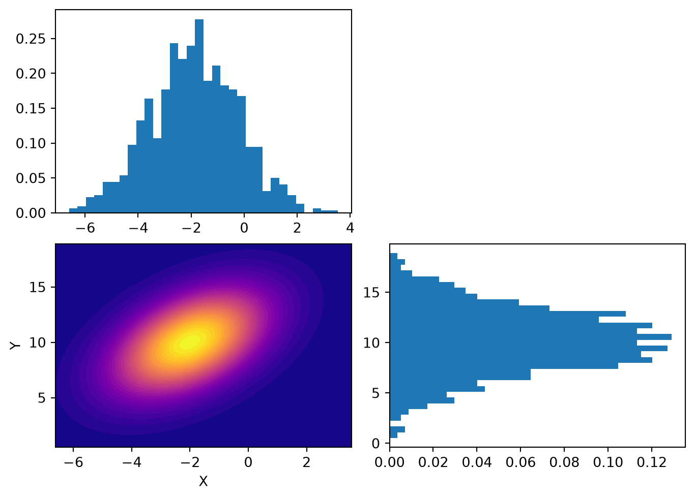
Images and heatmaps
The imshow plot function is a low-level function for displaying arrays. The main use case is to plot image data.
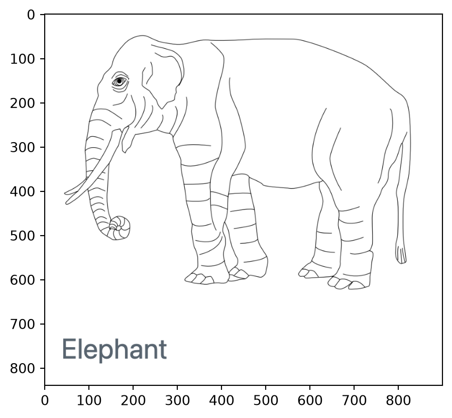
The matshow plot function should be preferred for numeric arrays. Best suited for actual heatmaps.
The following uses the contour map data, bins it over a discretized 2D grid, and displays it as a heatmap.
# Discretize: count how many points fall in each 2D bin
counts, xedges, yedges = np.histogram2d(x, y, bins = 20)
fig, ax = plt.subplots(figsize=(6, 5))
im = ax.matshow(
counts.T, # histogram2d puts x along rows; transpose so x runs horizontally
cmap = "viridis", # sequential: counts go from low to high
origin = "lower", # put small y at the bottom, like a normal plot
aspect = "auto", # x and y ranges differ, so don't force square cells
extent = [xedges[0], xedges[-1], yedges[0], yedges[-1]], # label axes in data units
)
ax.xaxis.set_ticks_position("bottom") # matshow puts x ticks on top by default
ax.set_xlabel("x")
ax.set_ylabel("y")
ax.set_title("Binned bivariate data (n = 1000)")
fig.colorbar(im, ax = ax, label = "Points per bin")
plt.show()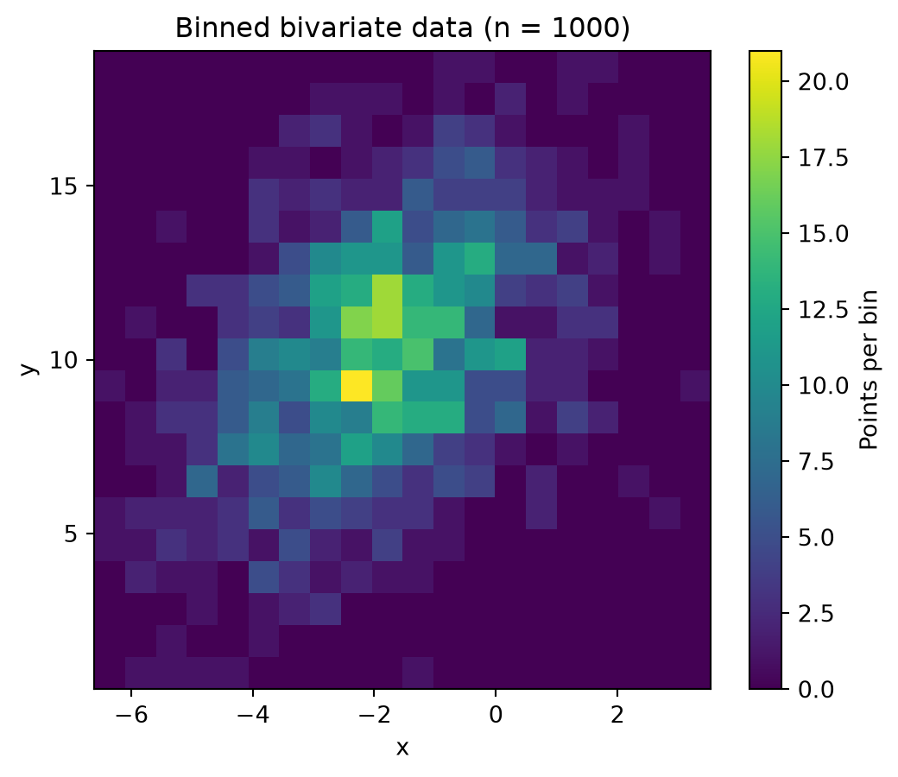